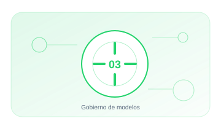

03 · PILAR
Gobierno de modelos
Mantener inventario, documentación, validación y supervisión de modelos y sistemas.
EnfoqueTécnico, práctico y entendible
Contenido4 guías extensas y aplicables
Aplicable aOrganizaciones y sistemas reales

03.01 · GUÍA
Inventario y Shadow AI
Descubre usos autorizados y no autorizados. dependencias y responsables.
22–28 min+2.141 palabrasAbrir guía →
03.02 · GUÍA
Documentación de modelos
Documenta finalidad. límites. datos. evaluación. riesgos y uso previsto.
20–26 min+1.913 palabrasAbrir guía →
03.03 · GUÍA
Ciclo de vida de modelos
Controla altas. versiones. validaciones. cambios significativos y retirada.
20–26 min+1.973 palabrasAbrir guía →
03.04 · GUÍA
Monitorización de modelos
Detecta degradación. drift. pérdida de calidad y cambios de comportamiento.
18–24 min+1.801 palabrasAbrir guía →
01
InventarioControl y evidencia aplicable
02
ValidaciónControl y evidencia aplicable
03
AprobaciónControl y evidencia aplicable
04
MonitorizaciónControl y evidencia aplicable
05
RetiradaControl y evidencia aplicable
Cada guía incluye explicación, implantación, controles, evidencias, errores habituales, métricas y referencias.